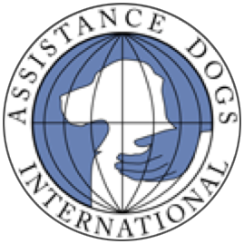
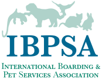

In the News
Learn more about Prison Pet Partnership by reading one of the stories below, or check out our most recent newsletter. Additional newsletters may be found at the bottom of this page.
Camille Begins a New Chapter in Life
This month we shed happy tears as we said goodbye to Camille, a trainer and experienced groomer. With the tears, there were lots of hugs, smiles and waves as she walked out the front door of WCCW, released to join her husband and son. Camille left with her adopted PPP cat, Luna, who will help her with the transition back into life outside of prison.
Camille will be missed by her fellow PPP workers and all the dogs who were her regular groom clients. We, however will look forward to hearing about her next chapter and how the skills she gained while at PPP will help her find work quickly in the pet care industry. Without the generosity of many donors, the work we do to enrich the lives of inmates, homeless animals and the community through the human-animal bond and stories like this would not be possible.
Prison Pet Partnership featured in Gig Harbor Living Local Magazine
Prison Pet Partnership was featured in the Life & Community section of September’s issue of Gig Harbor Living Local Magazine. Check out the article on pages 34–36 titled Everyone’s Best Friend — Prison Pet Partnership gives second chances to both dogs and people by Sarah Polyakov.
Prison Pet Partnership receives a $7,500 Helping Heroes grant from the Petco Foundation
Prison Pet Partnership was awarded a Helping Heroes grant of $7,500 from the Petco Foundation and Natural Balance. We asked for funds to assist us with operating, program and payroll expenses for our Service Dog Program. Thanks to the help of Petco employees in partnership with Natural Balance and customers across the country, this annual campaign raised funds while recognizing and celebrating the impact that service and therapy animals have on the lives of millions of people. Without them, this grant would not have been possible. It will help Prison Pet Partnership further our mission enriching the lives of inmates, homeless animals and the community through the human-animal bond. Thank you Petco Foundation and Natural Balance!
Life on the lam is over for Indy
After hours of stake outs and posting fliers, Indy, our service-dog-in-training was captured at last! Many thousands of thanks to our volunteers and Gig Harbor residents for all their hard work and efforts! Indy escaped Wednesday from the state women’s prison at Purdy. Officials said the elusive canine was captured Saturday evening and returned to the prison on Sunday morning, much to the relief of Prison Pet Partnership staffers who run the training program. Beth Rivard, who directs the program, said Indy’s movement patterns were tracked Friday and Saturday as he wandered at large near the Gig Harbor area.
Book features Prison Pet Partnership
We are featured in the book “To The Rescue”, which can be purchased at founddogs.com. All proceeds are donated to shelters and animal welfare organizations.
Parker the dog gets juror identification badge
Chad Norris of Vancouver was selected to serve as a juror for a recent criminal trial in Superior Court. Chad, who is confined to a wheelchair, has a service animal. Parker is a five-year old Golden Retriever. Recognizing that Parker would be sitting with Chad on the jury, the Court issued Parker a juror identification badge though he was a non-voting member of the jury panel. Judge Wulle set a good example of providing accommodations not only for Chad but for Parker too, allowing Parker to have water, food and “restroom” breaks as needed, according to Tim McVicker, the county’s Americans with Disability Act compliance program coordinator. “Clark County continues to provide reasonable accommodations to individuals with disabilities so they can more fully participate in county services, programs and activities,” Tim says. “Although issuing a juror button to Parker was not required, the Court believed it helped Chad feel more welcomed and accepted as a valued member of the community and legal system.” Parker was trained as a service animal at the Women’s Correctional Facility in Purdy, WA, as part of Prison Pets Partnership. Chad has been actively involved in that program since 1996 and Parker is his second service animal. If you have any questions regarding the Americans with Disability Act, service animals or the county’s responsibilities under the ADA, please contact Risk Management at ext. 4924.
New program at prison teaches dog training and care skills
Read about our program on Kitsap Sun online!
Community contest winner provides new logo to local non-profit
Lynn Stevenson won the Prison Pet Partnership logo contest and is replacing the program logo with a new more sophisticated look
To become more connected with their community and to change the look of their logo, Prison Pet Partnership ran a logo contest the end of 2008 through the beginning of 2009. Lynn Stevenson was declared the winner of the contest with her modern logo using imagery of diversity and partnerships.
Prison Pet Partnership started promoting its logo contest to the community in the fall of 2008. The contest was open to people of all ages as a way to not only develop a new logo, but to give the community an opportunity to become a part of the organization and to get to know the organization better. There were over a dozen entries that came from students at several schools in the Puget Sound area, from professional graphic designers and from graphic designers at heart.
In early April 2009, Lynn Stevenson’s design was selected as the winner of the logo contest. Her use of different P’s in the design projects diversity and the program’s three parts of its mission—rescue and trains homeless dogs, provide service dogs for persons with disabilities, operates a boarding and grooming facility to provide vocational education for women inmates. The new logo subtly displays prison bars to emphasize the importance of PPP’s partnership and with the Washington Correctional Center for Women. It also displays a dog paw within the bars to emphasize the organization’s focus on using shelter dogs. The sophisticated font gives the new logo professional look.
Prison Pet Partnership thanks Lynn Stevenson for her hard work and design and for helping her community. As the contest winner, Lynn will receive public recognition, an invitation to Prison Pet Partnership’s Bark and Bid Auction, a shirt with the new design and a gift certificate for Prison Pet Partnership boarding and grooming services.
We are considered one of the top three kennels in the Puget Sound area
Dirty facilities, cramped spaces, and mediocre attention to pets are just some of the findings in a recent customer survey of local kennels. Based on the survey results, you’d be wise to start shopping around long before you need board your pet. Local Consumers CHECKBOOK magazine subscribers rated 36 kennels for cleanliness, spaciousness, affection toward the animals, pick-up and drop-off arrangements and overall quality. On the plus side, most local kennels make a concerted effort to provide quality care.
 